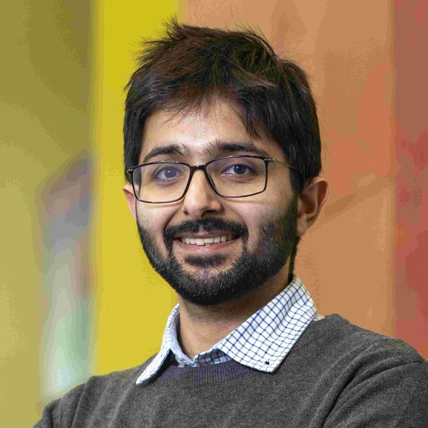

Gul Hameed
Optimisation scientist. Modelling Specialist at AstraZeneca, with a PhD in trust-region algorithms for grey-box optimisation from the University of Surrey. I build methods and software that make large, badly behaved engineering models solve reliably and help people make decisions with them.
Experience
Modelling Specialist
Developing model-agnostic numerical tools for process modelling: sensitivity analysis, parameter estimation and design of experiments.
Visiting Researcher
Trust-region grey-box optimisation of carbon capture and utilisation flowsheets with embedded PDAE models (dual-function material reactors, pressure swing adsorption). Contributed the funnel globalisation mechanism to Pyomo's trust-region solver.
Plant Manager, Fluor Pilot Plant
Trained undergraduate and master's students to operate a pilot-scale process plant; owned safety, scheduling and data collection.
Scientific Software Developer, Frameworks and Simulators
Built the open-source optimisation tools DECO2 (ASEAN energy planning, 2024) and B-HYPSYS (hydrogen production and storage, 2024–25). Wrote the proposals for, and as lead researcher delivered, the £70k RIDA project (FCDO and Research England ODA), including workshops and a keynote in Kuala Lumpur and Manila.
Graduate Teaching Assistant
Heat transfer laboratory and advanced pharmaceutical formulations.
Research Assistant, Tandem Catalysis
Synthesised, characterised and tested catalysts for CO2 hydrogenation via the reverse water-gas shift reaction, using packed-bed reactors and micro-GC analysis.
Graduate Trainee Officer (12 months)
Process & Plants department: technical evaluation of bids, budget certification, purchase orders and reporting; liaison between field operations and head office.
Trainee Engineer (4 months)
Quality control of manufactured and repaired connections, surface treatment and mechanical seals; observed drilling and production operations on an oil rig.
Researcher (13 months)
Thermal energy storage systems and phase change materials, using CFD; wrote a review article (2022).
Engineering Intern
HSEQ training; preventive maintenance of a gas engine and compressor; LPG recovery, crude oil and gas production plants.
Education
PhD, Chemical & Process Systems Engineering
Trust-region filter and funnel algorithms for nonlinear grey-box optimisation: convergence guarantees while replacing expensive simulations with data-driven surrogates.
MSc, Renewable Energy Systems Engineering
Project: large-scale regional energy-planning models formulated as MINLPs.
BS, Mechanical Engineering
Final-year project: design and fabrication of a thermal energy storage system.
Projects
Trust-region grey-box optimisation
A unified framework of filter and funnel algorithms for systems that mix first-principles equations with black-box simulations, with global convergence proved. Steps are accepted by Pareto dominance, and a hypervolume mechanism coordinates several simulators at once: up to 135× fewer simulator evaluations and designs with up to 8% lower cost.
Pyomo contribution
Funnel globalisation mechanism for Pyomo's trust-region solver (PR #3832), released in Pyomo 6.10.1. The first solver contribution to Pyomo from the University of Surrey.
DECO2
MILP/MINLP decision support for national energy-system planning: 5,000+ binary and 20,000+ continuous variables, solved through custom two-stage initialisation. Studies for Malaysia, the Philippines, Mauritius and Pakistan.
B-HYPSYS
Design and hourly dispatch of hybrid hydrogen production and storage over a full year (8,760 periods, ~150,000 variables). Staged homotopy and structured multistart make a nonconvex model solve reliably for non-specialist users.
Process simulator
A flowsheet simulator written from scratch in Python, with custom NLP and trust-region solver orchestration across multi-unit topologies and pytest throughout.
Thermal energy storage system
Undergraduate R&D project with PIEAS and Electrical Engineering Services: designed and built a thermal energy storage system using a helical-coil heat exchanger and low-temperature phase change materials, backed by PKR 0.8 million in research funding.
Publications
- Optimisation of synthetic natural gas production via direct air capture and utilisation using reduced models under a novel trust-region funnel method. Systems and Control Transactions 5 (2026).
- A trust-region funnel algorithm for grey-box optimisation. AIChE Journal e70258 (2026).
- Trust-region filter algorithms utilising Hessian information for grey-box optimisation. AIChE Journal e70236 (2026).
- Pathways to decarbonise the power sector in Mauritius. Energy Strategy Reviews 62 (2025) 101930.
- Optimal transition pathways to a net-zero power grid in the Philippines. Energy Strategy Reviews 62 (2025) 101893.
- Combining energy system planning with carbon emissions trading optimisation for decarbonisation of emerging economies. Computer Aided Chemical Engineering 53 (2024).
- A novel mathematical model to incorporate carbon trading and emission reduction techniques within energy planning models. Sustainable Production and Consumption 40 (2023) 571–589.
- Experimental optimisation of Ni/P atomic ratio for nickel phosphide catalysts in reverse water-gas shift. Journal of CO2 Utilisation 77 (2023) 102606.
- Low temperature phase change materials for thermal energy storage: current status and computational perspectives. Sustainable Energy Technologies and Assessments 50 (2022) 101808.
Talks & recognition
- Talks at the SIAM Conference on Optimization (OP26, Edinburgh) and ESCAPE36 (Sheffield), 2026; posters at the CAPD Annual Meeting (CMU, 2026) and ESCAPE34-PSE24 (Florence, 2024)
- Vice-Chancellor's Award, Postgraduate Researcher of the Year 2024: Faculty winner and University finalist
- Finalist, IChemE Young Engineers Awards for Innovation and Sustainability (Energy and Climate Action), 2026
- Keynote and workshops on energy decarbonisation for government and industry, Manila and Kuala Lumpur, 2024
- Chair of the Organising Committee, Surrey PGR/ECR Conference 2025 (100+ talks across 21 schools); session chair at several conferences and research festivals
- Founder and first President, Student Energy Surrey (2024–25)
- President, PIEAS Literary Society (2019–20), overseeing the university's non-technical societies: dramatics, arts, literature, videography and photography
Beyond work
Languages: Urdu (native), English (professional), French (basic)
Contact
I'm happy to talk about optimisation, process modelling and scientific software. Email gulhameed361@gmail.com or find me on LinkedIn.